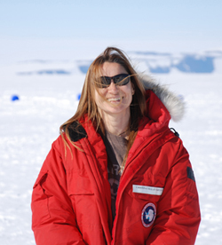

|
November 19, 2011
Geologists are scientists that study the Earth in order to understand what our planet looked like in the past, how it changed to its present form and what it will look like in the future. These are important issues for all of us so we can better predict and prepare for any changes that may occur and can affect our way of life. Antarctica is a great place for geologists to work, because it is a very old continent that has experienced a lot of changes and can help answer some of these questions. Scientists have drilled for rocks in Antarctica to learn how mountains and volcanoes formed and how they might be related to earthquakes or what kind of plants and animals lived there in the past and why and when they dissapeared. Rocks can also tell us why there is so much ice in Antarctica, when it all formed and, ultimately, how its melting will affect the rest of the world."Why Is Antarctica So "Cool" To Geologists?" An interactive session led by Cristina Millan Ph.D. student in the School of Earth Sciences at the Ohio State University Cristina Millan is a Ph.D. student in the School of Earth Sciences at the Ohio State University. Her research focusses on rock deformation, rock structures and fluids beneath the Earth's surface. She has travelled to Antarctica to do field work on three occasions, two of them as a member of the ANDRILL research team. |